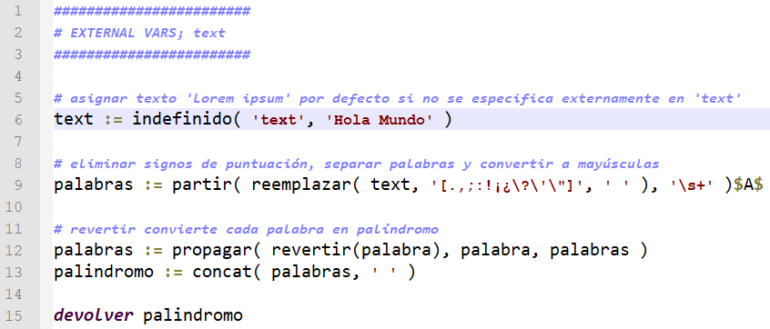

Descripción
Ejecuta un script JMEScript y devuelve el resultado o, si no devuelve valor, permite retornar un valor por defecto. Además permite el paso de parámetros al script para usarlo como un módulo o función.
Cadena de entrada
script
Cadena de salida
SCRIPT
Uso
script(<cod_fuente>[,<varmap>[,<valor_defecto>[,<tiempo_max>]]])
| Parámetros | |||
|---|---|---|---|
| # | Parámetro | Descripción | Valor por defecto |
| 1 | cod_fuente | Código JMEScript a ejecutar. Se puede introducir como un vector de cadenas de texto en el que cada cadena es una línea del script o como un único texto (con saltos de línea obligatorios) | |
| 2 | varmap | Mapa de variables externas; cada clave es un texto con un nombre válido de variable y el valor el terminal asignado a la variable | dic([]) |
| 3 | valor_defecto | En caso de que el script no devuelva un valor, se asignará este valor (o se devolverá error si no se especifica este valor) | ∅ |
| 4 | tiempo_max | Máximo tiempo de ejecución del script en milisegundos antes de lanzar una excepción. Un valor infinito o negativo no activará el temporizador. |
∞ |
Ejemplos
Si se introducen las líneas de código como vector, es necesario pasar el mapa de variables (aunque sea vacío):
script(['lista:=[randint(1,6)]','mientras cola(lista)!=6 inicio:','lista;=randint(1,6)','fin','devolver lista'],dic([]))
VectorEvaluado: [3,3,2,5,1,5,5,1,1,2,1,4,3,3,2,2,5,1,6]
Script que recibe una variable externa, en caso contrario inicializa por defecto mediante indefinido :
script(archivotxt('palindromo.jmes'),dic([]))
Texto: 'ALOH ODNUM'
script(archivotxt('palindromo.jmes'),dic('text','Euler Galois Russell'))
Texto: 'RELUE SIOLAG LLESSUR'
Bucle infinito:
script(['mientras verdadero inicio:','fin'],dic([]),0,1000)
FuncionException: <<<FuncionException>>> en funcion "script": Tiempo excedido en script: 1000ms --> script(Vector:[['mientras verdadero inicio:','fin'],dic([]),0,1000])
Desde / Última modificación
v0.5.0